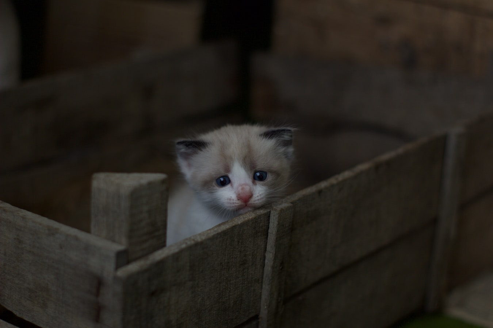

생활형 온라인 게임 고갈 2020년 생활형 온라인 게임을 하고 싶어서 코딩을 배우기 시작합니다 꼭 게임이 아니더라도 무언가를 만들고 싶습니다.
내가 원하는 생활형 온라인 게임은 우리의 일상을 담는 것이다. 인간의 실생활을 바탕으로 재미있는 게임을 만들고 싶다.

직업은 정말 다양하게 나타내고 싶다. 계속해서 업데이트되는 직업들로 유저들의 지루함을 날려버릴것이다. 일단은 5가지의 직업으로 시작할 것이다.